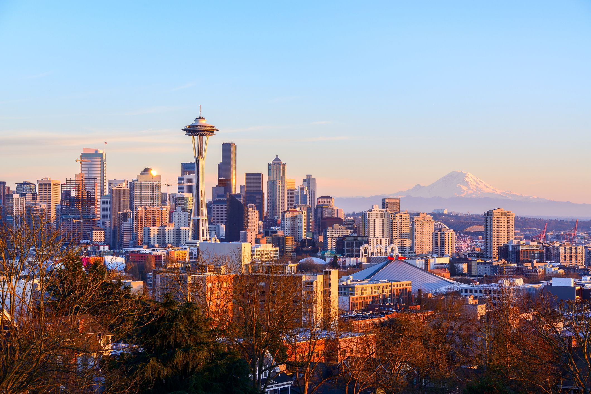

I really love Seattle because it is just a really cool town. There is so many things to do in this city. There is plenty of city life mixed in with wilderness things. I love going to the aquarium downtown. There is so many cool exhibits from the sea otter too the giant octopus. It also is really cool that the aquarium literally is perched right on the Puget sound. I also love all the food that there is to eat. There is so much great seafood, I love it. I really love shrimp and halibut. There is so many good fish and chip places to choose from. There is also a lot of great Asian food in the city. The coffee is also really good, I'm not the biggest coffee guy but I can appreciate a good cup of coffee now and again. It is also fun to go on a ferry over to Bainbrigde Island. It is also fun to go up on the space needle and see the sites. I also really like seeing MT. Rainier in the background this big snowy mountain just all year long it is a very majestic site.
